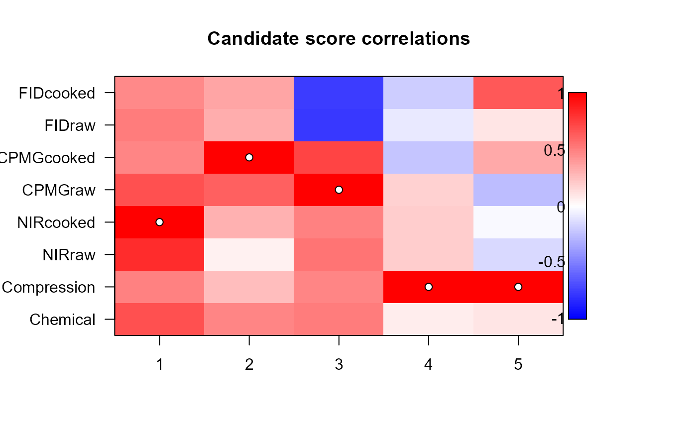
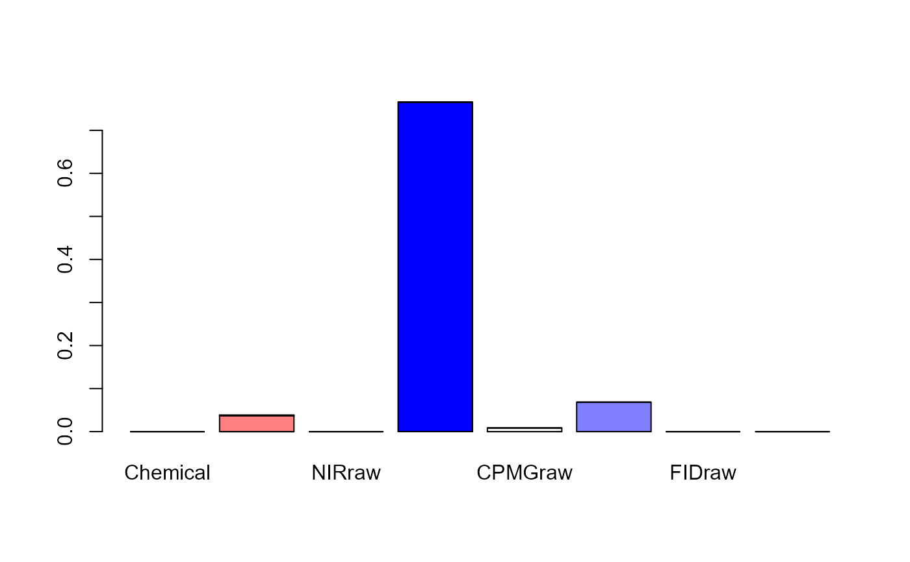

Various plotting procedures for rosa objects. image.rosa
makes an image plot of each candidate score's correlation to the winner or the block-wise
response residual. These plots can be used to find alternative block selection for tweaking
the ROSA model. barplot.rosa makes barplot of block and component explained variances.
loadingweightsplot is an adaptation of pls::loadingplot to plot loading weights.
# S3 method for rosa image( x, type = c("correlation", "residual", "order"), ncomp = x$ncomp, col = mcolors(128), legend = TRUE, mar = c(5, 6, 4, 7), las = 1, ... ) # S3 method for rosa barplot( height, type = c("train", "CV"), ncomp = height$ncomp, col = mcolors(ncomp), ... )
| x | A |
|---|---|
| type | An optional |
| ncomp | Integer to control the number of components to plot (if fewer than the fitted number of components). |
| col | Colours used for the image and bar plot, defaulting to mcolors(128). |
| legend | Logical indicating if a legend should be included (default = TRUE) for |
| mar | Figure margins, default = c(5,6,4,7) for |
| las | Axis text direction, default = 1 for |
| ... | Additional parameters passed to |
| height | A |
No return.
Liland, K.H., Næs, T., and Indahl, U.G. (2016). ROSA - a fast extension of partial least squares regression for multiblock data analysis. Journal of Chemometrics, 30, 651–662, doi:10.1002/cem.2824.
Overviews of available methods, multiblock, and methods organised by main structure: basic, unsupervised, asca, supervised and complex.
